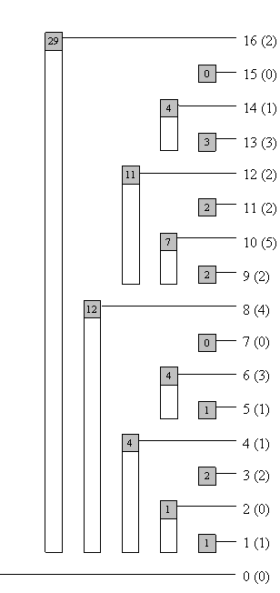
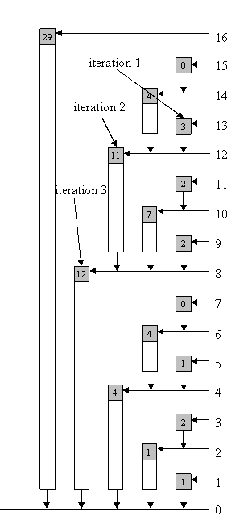
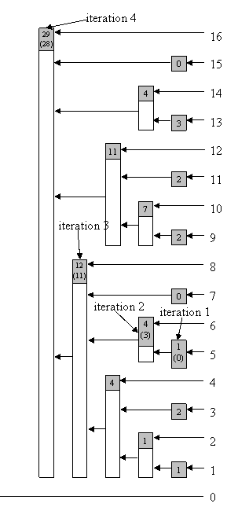
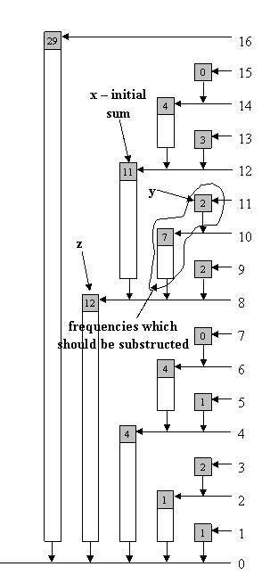
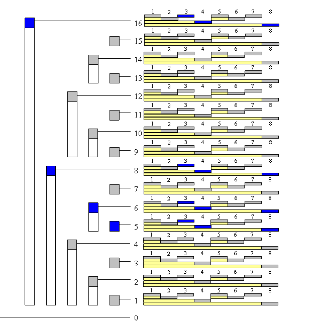
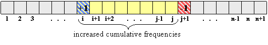

Member Search

|
Introduction
Notation
Basic idea
Isolating the last digit
Read cumulative frequency
Change frequency at some position and update tree
Read the actual frequency at a position
Scaling the entire tree by a constant factor
Find index with given cumulative frequency
2D BIT
Sample problem
Conclusion
References
Introduction
We often need some sort of data structure to make our algorithms faster. In this article we will
discuss the Binary Indexed Trees structure. According to Peter M. Fenwick,
this structure was first used for data compression. Now it is often
used for storing frequencies and manipulating cumulative frequency
tables.
Let's define the following problem: We have n boxes. Possible queries are
1. add marble to box i
2. sum marbles from box k to box l
The naive solution has time complexity of O(1) for query 1 and O(n) for query 2. Suppose we make m queries. The worst case (when all queries are 2) has time complexity O(n * m). Using some data structure (i.e. RMQ) we can solve this problem with the worst case time complexity of O(m log n). Another approach is to use Binary Indexed Tree data structure, also with the worst time complexity O(m log n) -- but Binary Indexed Trees are much easier to code, and require less memory space, than RMQ.
Notation
BIT - Binary Indexed Tree
MaxVal - maximum value which will have non-zero frequency
f[i] - frequency of value with index i, i = 1 .. MaxVal
c[i] - cumulative frequency for index i (f[1] + f[2] + ... + f[i])
tree[i] - sum of frequencies stored in BIT with index i
(latter will be described what index means); sometimes we will write tree frequency instead
sum of frequencies stored in BIT
num¯ - complement of integer num (integer where each binary digit is inverted: 0 -> 1; 1 -> 0 )
NOTE: Often we put f[0] = 0, c[0] = 0, tree[0] = 0, so sometimes I will just ignore index 0.
Basic idea
Each integer can be represented as sum of powers of two. In the same
way, cumulative frequency can be
represented as sum of sets of subfrequencies. In our case, each set
contains some successive number of non-overlapping frequencies.
idx is some index of BIT. r is a position in idx of the last digit 1 (from left to right) in binary notation. tree[idx] is sum of frequencies from index (idx - 2^r + 1) to index idx (look at the Table 1.1 for clarification). We also write that idx is responsible for indexes from (idx - 2^r + 1) to idx (note that responsibility is the key in our algorithm and is the way of manipulating the tree).
| 1 | 2 | 3 | 4 | 5 | 6 | 7 | 8 | 9 | 10 | 11 | 12 | 13 | 14 | 15 | 16 | |
|---|---|---|---|---|---|---|---|---|---|---|---|---|---|---|---|---|
| f | 1 | 0 | 2 | 1 | 1 | 3 | 0 | 4 | 2 | 5 | 2 | 2 | 3 | 1 | 0 | 2 |
| c | 1 | 1 | 3 | 4 | 5 | 8 | 8 | 12 | 14 | 19 | 21 | 23 | 26 | 27 | 27 | 29 |
| tree | 1 | 1 | 2 | 4 | 1 | 4 | 0 | 12 | 2 | 7 | 2 | 11 | 3 | 4 | 0 | 29 |
Table 1.1
| 1 | 2 | 3 | 4 | 5 | 6 | 7 | 8 | 9 | 10 | 11 | 12 | 13 | 14 | 15 | 16 | |
|---|---|---|---|---|---|---|---|---|---|---|---|---|---|---|---|---|
| tree | 1 | 1..2 | 3 | 1..4 | 5 | 5..6 | 7 | 1..8 | 9 | 9..10 | 11 | 9..12 | 13 | 13..14 | 15 | 1..16 |
Table 1.2 - table of responsibility
Image 1.3 - tree of responsibility for indexes (bar shows range of frequencies accumulated in top element)

Image 1.4 - tree with tree frequencies
Image 1.4 - tree with tree frequencies
Suppose we are looking for cumulative frequency of index 13 (for the first 13 elements). In binary notation, 13 is equal to 1101. Accordingly, we will calculate c[1101] = tree[1101] + tree[1100] + tree[1000] (more about this later).
Isolating the last digit
NOTE: Instead of "the last non-zero digit," it will write only "the last digit."
There are times when we need to get just the last digit from a binary number, so we need an
efficient way to do that. Let num be the integer whose last digit we want to isolate. In binary
notation num can be represented as a1b, where a represents binary digits before the last digit and
b represents zeroes after the last digit.
Integer -num is equal to (a1b)¯ + 1 = a¯0b¯ + 1. b consists of all zeroes, so b¯
consists of all ones. Finally we have
Now, we can easily isolate the last digit, using bitwise operator AND (in C++, Java it is &) with num and -num:
a1b
& a¯1b
--------------------
= (0...0)1(0...0)
Read cumulative frequency
If we want to read cumulative frequency for some integer idx, we add to sum tree[idx], substract
last bit of idx from itself (also we can write - remove the last digit; change the last digit to zero)
and repeat this while idx is greater than zero. We can use next function (written in C++)
int read(int idx){
int sum = 0;
while (idx > 0){
sum += tree[idx];
idx -= (idx & -idx);
}
return sum;
}
Example for idx = 13; sum = 0:
| iteration | idx | position of the last digit | idx & -idx | sum |
|---|---|---|---|---|
| 1 | 13 = 1101 | 0 | 1 (2 ^0) | 3 |
| 2 | 12 = 1100 | 2 | 4 (2 ^2) | 14 |
| 3 | 8 = 1000 | 3 | 8 (2 ^3) | 26 |
| 4 | 0 = 0 | --- | --- | --- |

Image 1.5 - arrows show path from index to zero which we use to get sum (image shows example for index 13)
Image 1.5 - arrows show path from index to zero which we use to get sum (image shows example for index 13)
So, our result is 26. The number of iterations in this function is number if bits in idx, which is at most log MaxVal.
Time complexity: O(log MaxVal).
Code length: Up to ten lines.
Change frequency at some position and update tree
The concept is to update tree frequency at all indexes which are
responsible for frequency whose value we are changing. In reading
cumulative frequency at some index,
we were removing the last bit and going on. In changing some frequency val in tree, we should increment value at the current index (the starting index is always the
one whose frequency is changed) for val, add the last digit to index and go on while the index is less than or equal to MaxVal. Function in C++:
void update(int idx ,int val){
while (idx <= MaxVal){
tree[idx] += val;
idx += (idx & -idx);
}
}
Let's show example for idx = 5:
| iteration | idx | position of the last digit | idx & -idx |
|---|---|---|---|
| 1 | 5 = 101 | 0 | 1 (2 ^0) |
| 2 | 6 = 110 | 1 | 2 (2 ^1) |
| 3 | 8 = 1000 | 3 | 8 (2 ^3) |
| 4 | 16 = 10000 | 4 | 16 (2 ^4) |
| 5 | 32 = 100000 | --- | --- |

Image 1.6 - Updating tree (in brackets are tree frequencies before updating); arrows show path while we update tree from index to MaxVal (image shows example for index 5)
Image 1.6 - Updating tree (in brackets are tree frequencies before updating); arrows show path while we update tree from index to MaxVal (image shows example for index 5)
Using algorithm from above or following arrows shown in Image 1.6 we can update BIT.
Time complexity: O(log MaxVal).
Code length: Up to ten lines.
Read the actual frequency at a position
We've described how we can read cumulative frequency for an index. It is obvious that
we can not read just tree[idx] to get the actual frequency for value at index idx. One approach is to have
one aditional array, in which we will seperately store frequencies for values. Both reading and storing take O(1); memory
space is linear. Sometimes it is more important to save memory, so we will show how you can get actual
frequency for some value without using aditional structures.
Probably everyone can see that the actual frequency at a position idx can be calculated by calling function read twice -- f[idx] = read(idx) - read(idx - 1) -- just by taking the difference of two adjacent cumulative frequencies. This procedure always works in 2 * O(log n) time. If we write a new function, we can get a bit faster algorithm, with smaller const.
If two paths from two indexes to root have the same part of path, then we can calculate the sum until the paths meet, substract stored sums and we get a sum of frequencies between that two indexes. It is pretty simple to calculate sum of frequencies between adjacent indexes, or read the actual frequency at a given index.
Mark given index with x, its predecessor with y. We can represent (binary notation) y as a0b, where b consists of all ones. Then, x will be a1b¯ (note that b¯ consists all zeros). Using our algorithm for getting sum of some index, let it be x, in first iteration we remove the last digit, so after the first iteration x will be a0b¯, mark a new value with z.
Repeat the same process with y. Using our function for reading sum we will remove the last digits from the number (one by one). After several steps, our y will become (just to remind, it was a0b) a0b¯, which is the same as z. Now, we can write our algorithm. Note that the only exception is when x is equal to 0. Function in C++:
int readSingle(int idx){
int sum = tree[idx]; // sum will be decreased
if (idx > 0){ // special case
int z = idx - (idx & -idx); // make z first
idx--; // idx is no important any more, so instead y, you can use idx
while (idx != z){ // at some iteration idx (y) will become z
sum -= tree[idx];
// substruct tree frequency which is between y and "the same path"
idx -= (idx & -idx);
}
}
return sum;
}
Here's an example for getting the actual frequency for index 12:
First, we will calculate z = 12 - (12 & -12) = 8, sum = 11
| iteration | y | position of the last digit | y & -y | sum |
|---|---|---|---|---|
| 1 | 11 = 1011 | 0 | 1 (2 ^0) | 9 |
| 2 | 10 = 1010 | 1 | 2 (2 ^1) | 2 |
| 3 | 8 = 1000 | --- | --- | --- |

Image 1.7 - read actual frequency at some index in BIT
(image shows example for index 12)
Image 1.7 - read actual frequency at some index in BIT
(image shows example for index 12)
Let's compare algorithm for reading actual frequency at some index when we twice use function read and the algorithm written above. Note that for each odd number, the algorithm will work in const time O(1), without any iteration. For almost every even number idx, it will work in c * O(log idx), where c is strictly less than 1, compare to read(idx) - read(idx - 1), which will work in c1 * O(log idx), where c1 is always greater than 1.
Time complexity: c * O(log MaxVal), where c is less than 1.
Code length: Up to fifteen lines.
Scaling the entire tree by a constant factor
Sometimes we want to scale our tree by some factor. With the procedures described above it is very simple.
If we want to scale by some factor c, then each index idx should be updated by
-(c - 1) * readSingle(idx) / c (because f[idx] - (c - 1) * f[idx] / c = f[idx] / c). Simple function in C++:
void scale(int c){
for (int i = 1 ; i <= MaxVal ; i++)
update(-(c - 1) * readSingle(i) / c , i);
}
This can also be done more quickly. Factor is linear operation. Each tree frequency is a linear composition of some frequencies. If we scale each frequency for some factor, we also scaled tree frequency for the same factor. Instead of rewriting the procedure above, which has time complexity O(MaxVal * log MaxVal), we can achieve time complexity of O(MaxVal):
void scale(int c){
for (int i = 1 ; i <= MaxVal ; i++)
tree[i] = tree[i] / c;
}
Time complexity: O(MaxVal).
Code length: Just a few lines.
Find index with given cumulative frequency
The naive and most simple solution for finding an index with a given cumultive frequency
is just simply iterating through all indexes, calculating cumulative frequency, and checking if it's equal to
the given value. In case of negative frequencies it is the only solution. However,
if we have only non-negative frequencies in our tree (that means cumulative frequencies for greater indexes are not smaller)
we can figure out logarithmic algorithm, which is modification of binary search.
We go through
all bits (starting with the highest one), make the index, compare the
cumulative frequency of the current index and given
value and, according to the outcome, take the lower or higher half of
the interval (just like in binary search). Function in C++:
// if in tree exists more than one index with a same
// cumulative frequency, this procedure will return
// some of them (we do not know which one)
// bitMask - initialy, it is the greatest bit of MaxVal
// bitMask store interval which should be searched
int find(int cumFre){
int idx = 0; // this var is result of function
while ((bitMask != 0) && (idx < MaxVal)){ // nobody likes overflow :)
int tIdx = idx + bitMask; // we make midpoint of interval
if (cumFre == tree[tIdx]) // if it is equal, we just return idx
return tIdx;
else if (cumFre > tree[tIdx]){
// if tree frequency "can fit" into cumFre,
// then include it
idx = tIdx; // update index
cumFre -= tree[tIdx]; // set frequency for next loop
}
bitMask >>= 1; // half current interval
}
if (cumFre != 0) // maybe given cumulative frequency doesn't exist
return -1;
else
return idx;
}
// if in tree exists more than one index with a same
// cumulative frequency, this procedure will return
// the greatest one
int findG(int cumFre){
int idx = 0;
while ((bitMask != 0) && (idx < MaxVal)){
int tIdx = idx + bitMask;
if (cumFre >= tree[tIdx]){
// if current cumulative frequency is equal to cumFre,
// we are still looking for higher index (if exists)
idx = tIdx;
cumFre -= tree[tIdx];
}
bitMask >>= 1;
}
if (cumFre != 0)
return -1;
else
return idx;
}
Example for cumulative frequency 21 and function find:
| First iteration | tIdx is 16; tree[16] is greater than 21; half bitMask and continue |
|---|---|
| Second iteration | tIdx is 8; tree[8] is less than 21, so we should include first 8 indexes in result, remember idx because we surely know it is part of result; subtract tree[8] of cumFre (we do not want to look for the same cumulative frequency again - we are looking for another cumulative frequency in the rest/another part of tree); half bitMask and contiue |
| Third iteration | tIdx is 12; tree[12] is greater than 9 (there is no way to overlap interval 1-8, in this example, with some further intervals, because only interval 1-16 can overlap); half bitMask and continue |
| Forth iteration | tIdx is 10; tree[10] is less than 9, so we should update values; half bitMask and continue |
| Fifth iteration | tIdx is 11; tree[11] is equal to 2; return index (tIdx) |
Time complexity: O(log MaxVal).
Code length: Up to twenty lines.
2D BIT
BIT can be used as a multi-dimensional data structure. Suppose you have a plane with dots (with non-negative
coordinates). You make three queries:
- set dot at (x , y)
- remove dot from (x , y)
- count number of dots in rectangle (0 , 0), (x , y) - where (0 , 0) if down-left corner, (x , y) is up-right corner and sides are parallel to x-axis and y-axis.
If m is the number of queries, max_x is maximum x coordinate, and max_y is maximum y coordinate, then the problem should be solved in O(m * log (max_x) * log (max_y)). In this case, each element of the tree will contain array - (tree[max_x][max_y]). Updating indexes of x-coordinate is the same as before. For example, suppose we are setting/removing dot (a , b). We will call update(a , b , 1)/update(a , b , -1), where update is:
void update(int x , int y , int val){
while (x <= max_x){
updatey(x , y , val);
// this function should update array tree[x]
x += (x & -x);
}
}
The function updatey is the "same" as function update:
void updatey(int x , int y , int val){
while (y <= max_y){
tree[x][y] += val;
y += (y & -y);
}
}
It can be written in one function/procedure:
void update(int x , int y , int val){
int y1;
while (x <= max_x){
y1 = y;
while (y1 <= max_y){
tree[x][y1] += val;
y1 += (y1 & -y1);
}
x += (x & -x);
}
}

Image 1.8 - BIT is array of arrays, so this is two-dimensional BIT (size 16 x 8).
Blue fields are fields which we should update when we are updating index (5 , 3).
Image 1.8 - BIT is array of arrays, so this is two-dimensional BIT (size 16 x 8).
Blue fields are fields which we should update when we are updating index (5 , 3).
The modification for other functions is very similar. Also, note that BIT can be used as an n-dimensional data structure.
- SRM 310 - FloatingMedian
- Problem 2:
Statement:
There is an array of n cards. Each card is putted face down on table. You have two queries:
1. T i j (turn cards from index i to index j, include i-th and j-th card - card which was face down will be face up; card which was face up will be face down)
2. Q i (answer 0 if i-th card is face down else answer 1)
Solution:
This has solution for each query (and 1 and 2) has time complexity O(log n). In array f (of length n + 1) we will store each query T (i , j) - we set f[i]++ and f[j + 1]--. For each card k between i and j (include i and j) sum f[1] + f[2] + ... + f[k] will be increased for 1, for all others will be same as before (look at the image 2.0 for clarification), so our solution will be described sum (which is same as cumulative frequency) module 2.

Image 2.0
Use BIT to store (increase/decrease) frequency and read cumulative frequency.
- Binary Indexed Trees are very easy to code.
- Each query on Binary Indexed Tree takes constant or logarithmic time.
- Binary Indexeds Tree require linear memory space.
- You can use it as an n-dimensional data structure.
References
[1] RMQ
[2] Binary Search
[3] Peter M. Fenwick